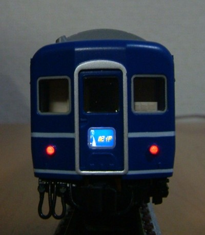
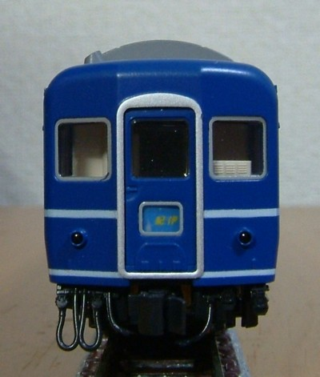
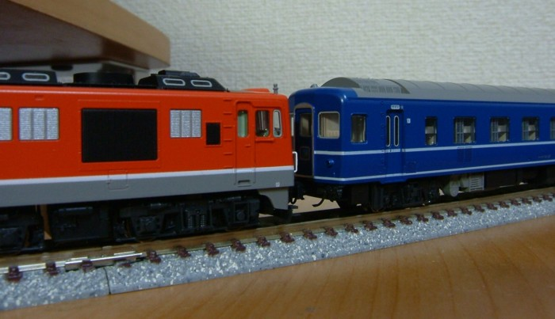
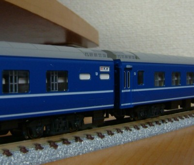

|  |  |
|
24系用の交換用マークを入れてあります。 そのままとは行きませんが、塗装で表現されているマークを剥がして、 そこに交換用マークの上下を切り取って両面テープで貼り付けるだけです。 トレインマークは明るすぎたのですこし減光しましたが、まだ明るいようです。 |
非点灯状態。ガラス越しに見える感じがよいですね。 「出雲」は発売時点で組み込まれていて交換用のマークには含まれないため、手に入りません…。 |
|  |
|
すでに「さくら」は吹っ飛んでます。 「紀伊」といえば飲酒運転という方も多いかとは思いますが…、やはりDF50ですね。 |
|  |
以前持っていたトミックスの車両も改めてみると、20年近く前の製品の割にはなかなか良くできてます。 主な違いは室内の表現と側面の印刷なのですが、 側面の方向幕が白くなるだけでここまで変わるとは思いませんでした。 |